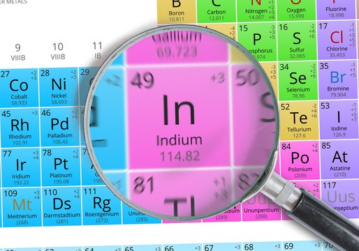
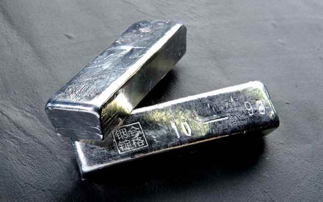

Индий
И́ндий (химический символ — In, от лат. Indium) — химический элемент 13-й группы (по устаревшей классификации — главной подгруппы третьей группы, IIIA), пятого периода периодической системы химических элементов Д. И. Менделеева с атомным номером 49. Относится к категории постпереходных металлов.

Индий обнаружили немецкие химики Фердинанд Райх и Теодор Рихтер (Theodore Richter) в 1863 году при спектроскопическом исследовании цинковой обманки. Они искали таллий, однако вместо зелёной линии этого элемента нашли в спектрах яркую неизвестную линию голубого цвета (профессор Ф. Райх страдал дальтонизмом и не мог различать цвета спектральных линий, поэтому все наблюдения регистрировал его ассистент Рихтер). Впоследствии металл был выделен Рихтером в незначительном количестве, но на Всемирной выставке 1867 года уже был представлен полукилограммовый слиток индия.
Источником индия служат отходы и побочные продукты производства цинка, свинца и олова. Индий путём выщелачивания серной кислотой переводят в раствор, из которого с помощью химически более активных цинка или алюминия выделяют (т. н. цементацией) черновой индий. Для очистки индия используют главным образом методы электрохимического и дистилляционного рафинирования. Соединения индия (нитрид, фосфид, арсенид, антимонид, халькогениды) применяют как полупроводниковые материалы. Металлический индий используют для создания антикоррозионных покрытий, изготовления зеркал и рефлекторов, при производстве легкоплавких сплавов.Мировое производство индия около 920 т/год (2021).

Индий используют в припоях, легкоплавких предохранителях, сигнальных устройств. Так, индий с висмутом, свинцом, оловом и кадмием плавится уже при 46,8°С и благодаря этому успешно справляется с ролью автоматического контролера, предохраняющего ответственные узлы и детали от перегрева. Известен сплав индия с галлием и оловом, который плавится при 10,6°С. Плавкие предохранители из индиевых сплавов широко применяют в системах пожарной сигнализации. Сплавами In-Sn-Cd-Bi и In-Pb-Sn «склеивают» металлы, стекло, кварц и керамику. Индиевые припои используют в производстве многослойных микросхем, когда температура припоя должна понижаться от слоя к слою. С помощью индия соединяют пьезокристаллы, есть индий и в щелочных (их еще называют алкалиновые, от английского названия щелочи) батарейках последнего поколения.